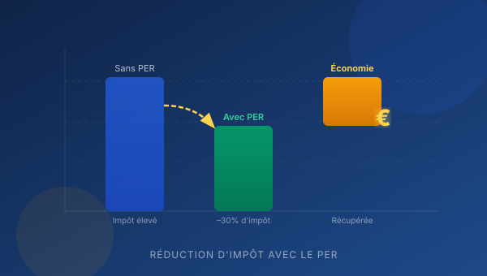
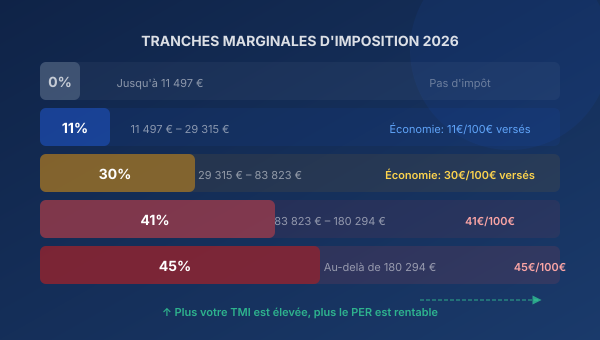
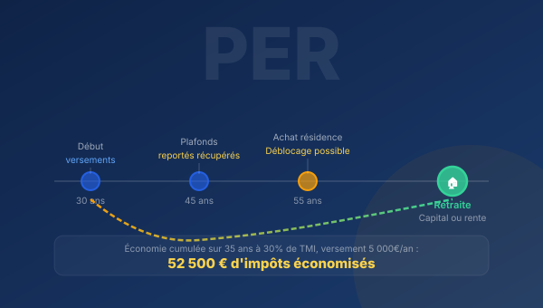

Plafond PER 2026 : combien pouvez-vous déduire cette année ?
Salariés, TNS, dirigeants : calculez précisément votre plafond disponible. Inclut les plafonds reportés sur 3 ans.
Guides pratiques, analyses et conseils d'experts pour réduire légalement votre impôt grâce au Plan d'Épargne Retraite.
Obtenir une étude personnalisée →
De la mécanique du PER aux plafonds de déduction, en passant par la fiscalité à la sortie : tout ce qu'il faut savoir pour optimiser votre impôt sur le revenu cette année. Inclut les barèmes IRPP 2026 et des exemples chiffrés.
De la simulation à la mise en place, en passant par les comparatifs et les cas pratiques par profil.
Salariés, TNS, dirigeants : calculez précisément votre plafond disponible. Inclut les plafonds reportés sur 3 ans.
Avantages fiscaux, disponibilité, succession : le comparatif complet pour faire le bon choix selon votre profil.
Assimilé-salarié vs gérant majoritaire : deux exemples concrets avec économies chiffrées à 41%.
Médecins, avocats, experts-comptables : découvrez les plafonds les plus élevés du marché et comment les optimiser.
Notre simulateur prend en compte votre statut, vos revenus et le barème IRPP 2026 pour un résultat précis et instantané.
Tout savoir sur le déblocage anticipé du PER pour financer votre premier achat tout en gardant l'avantage fiscal.

Analyse comparative des économies réalisables selon votre TMI, avec exemples chiffrés et recommandations pratiques.

PER-CO, PER-OB, PER individuel : décryptage des trois compartiments et guide pour choisir la formule adaptée.
Vous n'avez pas versé sur votre PER ces 3 dernières années ? Vous pouvez rattraper jusqu'à 3 années de plafonds non utilisés en un seul versement.
Le guide pratique pour agir au bon moment : quand décider, quels montants, comment éviter les erreurs de dernière minute.
Le PER offre des avantages successoraux souvent méconnus. Comment les utiliser pour transmettre un patrimoine optimisé à vos héritiers ?
Au-delà de l'avantage fiscal, votre PER est un vrai outil d'investissement. Comment choisir les bons supports selon votre horizon ?
Laissez votre email pour recevoir nos prochains articles et les mises à jour fiscales 2026.
Nos articles vous donnent les clés pour comprendre. Mais c'est un expert qui vous aidera à passer à l'action, avec une stratégie taillée pour votre situation précise.
Remplissez ce formulaire — rappel sous 24h
Un conseiller vous rappelle dans les 24h.